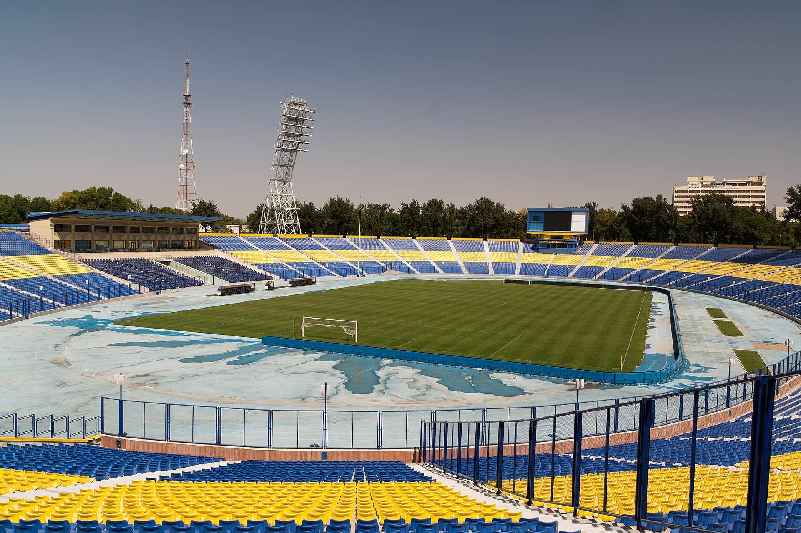

Uzbekistan to transfer 11 football clubs, including Pakhtakor, to private trust management
Entrepreneurs taking a club must cover at least 20% of its annual expenses and receive tax breaks; the state plans to stop financing professional football by 2030.

Uzbekistan will transfer 11 professional football clubs to private entrepreneurs under trust management. The tender includes Bunyodkor, Bukhara, Dinamo, Qizilqum, Navbahor, Nasaf, Neftchi, Lokomotiv, Mash'al, AGMK and Pakhtakor. It is being held under a presidential decree dated 24 March 2026 aimed at improving sports financing mechanisms and expanding private-sector involvement in the sector.
The terms
An entrepreneur taking a club into trust management must provide funding equal to at least 20% of the club's total annual expenses.
The incentives
Entrepreneurs receive a range of tax and financial incentives. In particular, when calculating corporate income tax, sponsorship funds directed to the club are deductible from taxable profit, but by no more than 10% of taxable profit. Players at these clubs are exempt from personal income tax, and their social tax rate is set at 1%. Entrepreneurs can obtain commercial bank loans at 14% a year for five years with a one-year grace period, and get a 50% discount on advertising on national TV and radio during sports broadcasts.
Phasing out state funding
State funding per club will be cut step by step: 35 billion soums for each Super League club (16 clubs) in the 2026 season, 30 billion in 2027 and 25 billion in 2028. The government plans to stop financing professional football by 2030 and move clubs to market-based mechanisms.